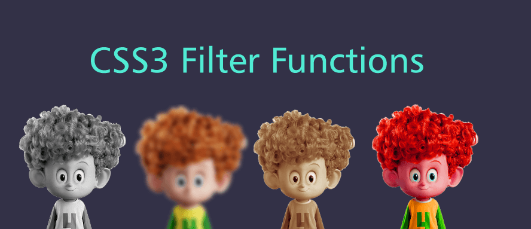

FILTER
IDEAS CLAVE
- filter: (atributo):
Expresión - blur(px):
Efecto desenfoque - brightness(0%):
Ajuste de brillo - constrast(0%):
Niveles de contraste - drop-shadow(px px px color):
Sombreado a los elementos - greyscale(0%):
Ajuste a escala de gris - hue-rotate(deg):
Rotacion total del elemento
NOTAS DE LA CLASE
La propiedad Filter define los efectos visuales (tanto los que son efectos de desenfoque y
saturacion) de un elemento: a menudo IMG.
Existen varios propiedades importantes:
- Blur - blur(px)
- Esta propiedad permite agregar un efecto de desenfoque a la imagen, utilizando valores, siendo el valor mas alto un gran desenfoque y el menor, lo contrario.
- Brillo - brightness(0%)
- Permite ajustar el brilo de la misma imagen, utilizando valores de escala de 100-0%, siendo el 100% el brillo predeterminado.
- Contraste - constrast(0%)
- Ajusta el contraste de las imagenes, utilizando valores como: el 0% siendo una imagen completamente en negro y el valor 100% como predeterminado.
- Sombra - drop-shadow(px px px color)
- Esta propiedad añade un sombreado paralelo a la misma imagen aplicada.
- Uitiliza varios valores aplicables siendo:H-Shadow (valor especifico en sombra horizontal), V-Shadow(Similar a lo anterior pero de manera vertical), Desenfoque(agrega un desenfoque al propio sombreado) y Propagacion(Permite que se expanda y crezca la sombra)
- Escala de Grises - greyscale(0%)
- Permite convertir la imagen a escala de grises utilizando valores como: 0(valor predeterminado) a 100% (completamente gris.)
- Tono - hue-rotate(deg)
- Aplica una rotacion al matriz de la imagen.
- El valor define el numero de grados alrededor del circulo del color que se ajustara a las muestras de la imagen.
